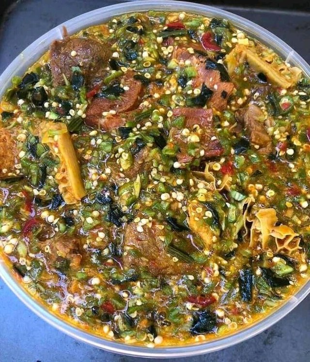

Okro Soup

Photo by: Bukky658
/ CC BY-SA 4.0
Description
Okra soup is a popular West African, particularly Nigerian, soup featuring chopped
okra as a key ingredient, combined with various meats or fish, spices,
and sometimes vegetables like spinach or Ugu leaf. It is known for its
distinct slimy texture, a result of the okra, and is often served with
staples like fufu, eba, or pounded yam. Okra soup is valued for being
nutritious and relatively easy to prepare.
Ingredient
- Sliced Okra (a medium-size bowl full)
- Stockfish head (medium size)
- 1 kg of meat (chicken)
- 5 shombo peppers
- 2 scotch bonnet peppers
- 500g mackerel
- 2 seasoning cubes
- Salt to taste.
- 200ml Red (palm) oil
- half cup of ground crayfish
Steps
- Wash the fish/chicken and season with a half teaspoon of salt,
two seasoning cubes, a cup of water, and half a cup of sliced onions.
Allow it to boil together for 10-15 minutes. Remove them while leaving
the stock in the pot.
- Add the stockfish to the boiling pot, one more cup of water, and cook
for about 10 minutes till they are soft for consumption.
Add two cups of water.
- Introduce 200ml of palm oil, add the crayfish, pepper/shombo, and salt to taste.
Let it boil for 8 minutes. Add the cooked chicken/fish and allow simmering for
three more minutes.
- Add the sliced okra and stir. Drop the cooked mackerel fish on top.
Allow simmering for 3-4 minutes, and you are done with this delicious soup.
You can serve ofe okro with eba, fufu or pounded yam.
Home